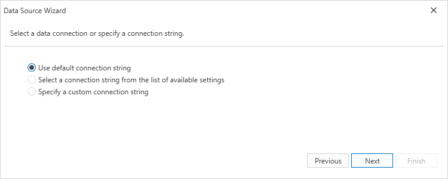
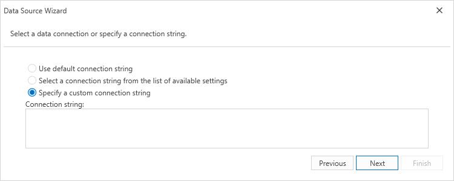
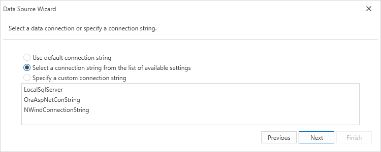

Select a Connection String
This page allows you to specify a connection string used to establish a data connection. The following options are available:
Default Connection String
Choose the default connection string if it is specified in the application’s configuration file.

Custom Connection String
Specify a custom connection string in the connection string editor and choose whether or not to store the string in the application’s configuration file.

Predefined Connection String
Select an existing connection string available in the current project.

Click Next to proceed to the next wizard page. If the current Entity Framework model provides stored procedures, go to the Bind to a Stored Procedure page; otherwise, proceed to the Configure Filters page.